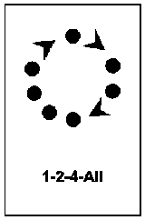
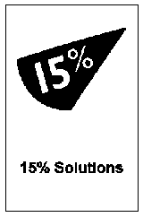
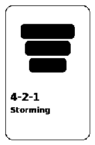
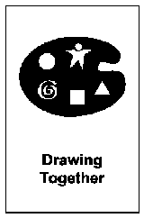
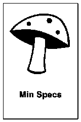
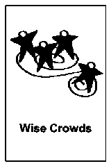
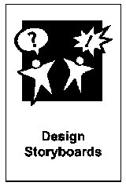
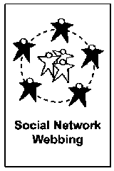

Impromptu Networking fa muovere le persone in coppie con domande brevi. Rompe il ghiaccio e crea connessioni in pochi minuti.
Le strutture
Trova lo strumento giusto per il tuo bisogno. Filtra per difficoltà, durata, fase o percorso.
41 strutture
Elenco strutture

1-2-4-All: far parlare tutti in 15 minuti
1-2-4-All è una struttura di facilitazione in quattro passaggi: riflessione individuale, scambio in coppia, discussione in gruppi da quattro, condivisione...
What, So What, Now What (W³) è una struttura di debriefing in tre domande: What (cosa è successo), So What (cosa significa per noi), Now What (cosa fare...

15% Solutions: agire subito senza permessi
15% Solutions chiede a ognuno: cosa puoi fare subito con le risorse e l'autonomia che hai già, senza chiedere permessi?
Troika Consulting è una Liberating Structure di consulenza tra pari in gruppi da tre: una persona porta una sfida (cliente), le altre due ascoltano e...

4-2-1-Storming: idee profonde in 10 minuti
Facilitare una generazione di idee strutturata che parte dal gruppo per arrivare a intuizioni individuali profonde, utilizzando la scrittura silenziosa...
9 Whys è una Liberating Structure ispirata alla tecnica dei 5 Whys: a coppie, una persona chiede ripetutamente "Perché è importante per te?" fino a...
HSR sviluppa l'ascolto empatico: ogni persona racconta un episodio in cui non si è sentita ascoltata, vista o rispettata, e il gruppo ascolta senza giudicare.
Le Helping Heuristics sono un metodo progressivo per migliorare il modo in cui diamo e riceviamo aiuto nelle organizzazioni, sperimentando diversi pattern...
Liquid Courage è una variante di [Impromptu Networking](/structures/impromptu-networking/) per far emergere lamentele croniche in modo giocoso e sicuro...
25/10 Crowd Sourcing è una Liberating Structure per raccogliere molte idee e farle valutare dal gruppo in circa 30 minuti. Ogni persona scrive una...
Le Appreciative Interviews fanno emergere storie positive a coppie, per costruire su ciò che già funziona nel team.
Trasforma una presentazione frontale in una conversazione guidata con il gruppo.
Il Conversation Café è una struttura che permette di facilitare conversazioni profonde e costruttive, riducendo il dibattito e favorendo l'ascolto attivo...

Drawing Together: pensare insieme disegnando
Drawing Together è una Liberating Structure che usa cinque simboli base per far emergere idee e metafore che il linguaggio verbale fatica a catturare. Non...
Mad Tea è una Liberating Structure dinamica a due cerchi concentrici: le persone si affrontano a coppie e rispondono a domande brevi a turno; a ogni...

Min Specs: regole minime per agire
Min Specs definisce le regole minime indispensabili per agire. Tutto il resto è libertà.
Pixie Reflection è un adattamento di [1-2-4-All](/structures/1-2-4-all/) con quattro domande guida su ambizioni, resistenze e paure legate al cambiamento...
Shift & Share (shift and share) è una Liberating Structure a stazioni: ogni squadra presenta un'innovazione o una best practice in pochi minuti mentre gli...
Spiral Journal è una Liberating Structure di riflessione individuale: ogni persona disegna una spirale su un foglio, risponde a domande guidate mentre la...
TRIZ è una Liberating Structure che inverte l'obiettivo: chiedi al gruppo come peggiorare la situazione. Da li' emergono le abitudini da interrompere, non...
Tiny Demons è una Liberating Structure creativa che aiuta i partecipanti a esternare e trasformare le proprie paure in modo giocoso e costruttivo.

Wise Crowds: feedback da molte prospettive
Wise Crowds permette di attivare rapidamente l'intelligenza collettiva di un gruppo per aiutare i singoli partecipanti a risolvere sfide concrete.
La matrice Agreement & Certainty aiuta a scegliere il metodo giusto, classificando la sfida come semplice, complicata, complessa o caotica.
Esplora scenari futuri partendo dalle incertezze che non puoi controllare.

Design StoryBoards: progettare workshop efficaci
Creare un piano dettagliato e visuale per far interagire i partecipanti in modo produttivo.
Il Discovery & Action Dialogue fa emergere pratiche che funzionano già nel gruppo, per risolvere problemi comuni con le risorse che avete.
Ecocycle Planning è una Liberating Structure che mappa progetti e attività sul ciclo di vita Ecocycle: nascita, maturità, distruzione creativa e...
Improv Prototyping è una Liberating Structure che testa soluzioni a sfide reali attraverso scene brevi improvvisate. Un piccolo gruppo recita uno...
Mad Love è una variante potente e intima di Mad Tea, progettata per creare connessioni profonde tra i partecipanti attraverso domande personali.

Social Network Webbing: mappare reti informali
Social Network Webbing è una Liberating Structure che rende visibile la rete di relazioni informali dentro e fuori l'organizzazione. In circa 55 minuti...
Portare alla luce le voci interiori contrastanti che influenzano il nostro percorso verso gli obiettivi, permettendo di riconoscere sia le resistenze che...
Wicked Questions è una Liberating Structure che formula domande paradossali: tengono insieme due obiettivi in tensione invece di forzare una scelta...
La Generative Relationships STAR permette ai gruppi di lavoro di analizzare e migliorare le proprie dinamiche relazionali, identificando pattern che creano...
Aiutare i gruppi a superare i conflitti "o questo o quello" per arrivare a soluzioni "sia questo che quello", favorendo un pensiero strategico più acuto e...
Open Space Technology (OST) è un formato di workshop in cui i partecipanti propongono i temi, creano l'agenda e si auto-organizzano in sessioni parallele...
Panarchy è una Liberating Structure che mappa come un'innovazione o un cambiamento si muove tra livelli di sistema: micro (persone e team), meso...
Purpose to Practice (P2P) è una Liberating Structure che allinea gli stakeholder su cinque elementi di un'iniziativa: Purpose (scopo), Principles...
Permettere ai partecipanti di trovare soluzioni innovative immergendosi nelle attività delle persone con esperienza diretta sul campo, come colleghi in...
User Experience Fishbowl permette a un piccolo gruppo di persone con esperienza diretta sul campo di condividere le proprie conoscenze con una comunità più...
WINFY chiarisce cosa serve da altre funzioni o team: ognuno esprime bisogni concreti in modo strutturato e costruttivo.
Nessuna struttura corrisponde ai filtri selezionati.